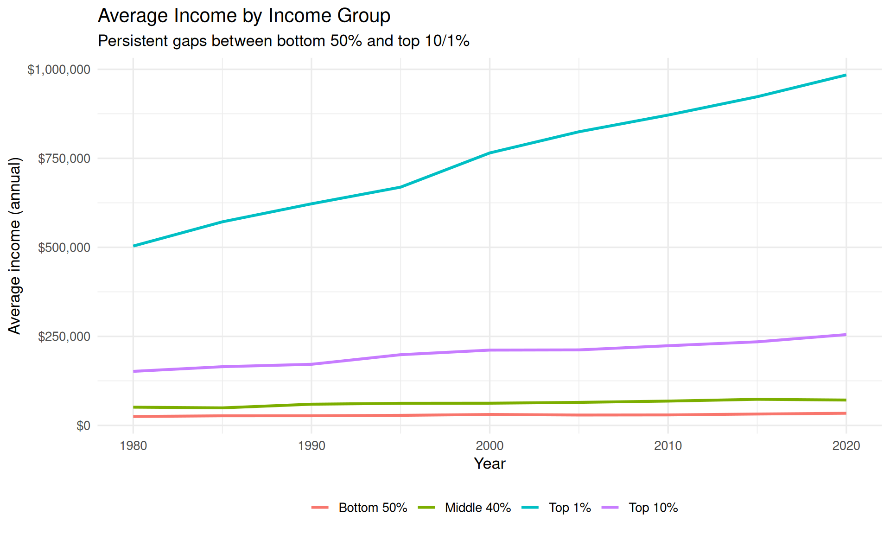
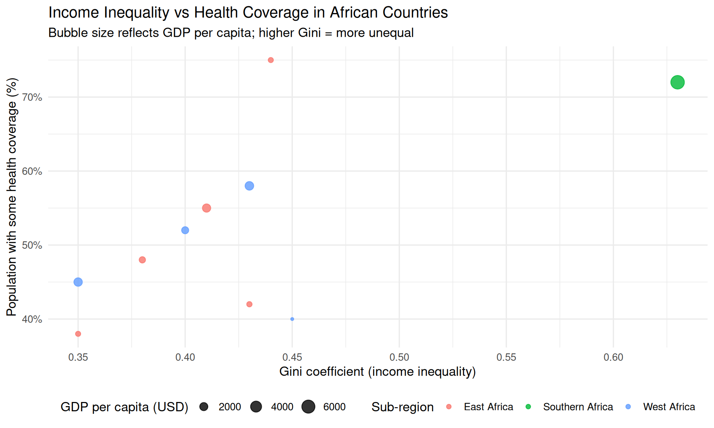
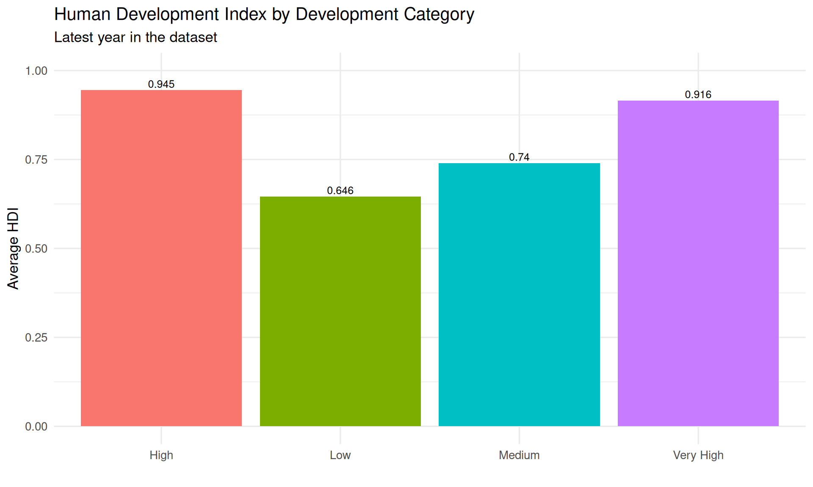
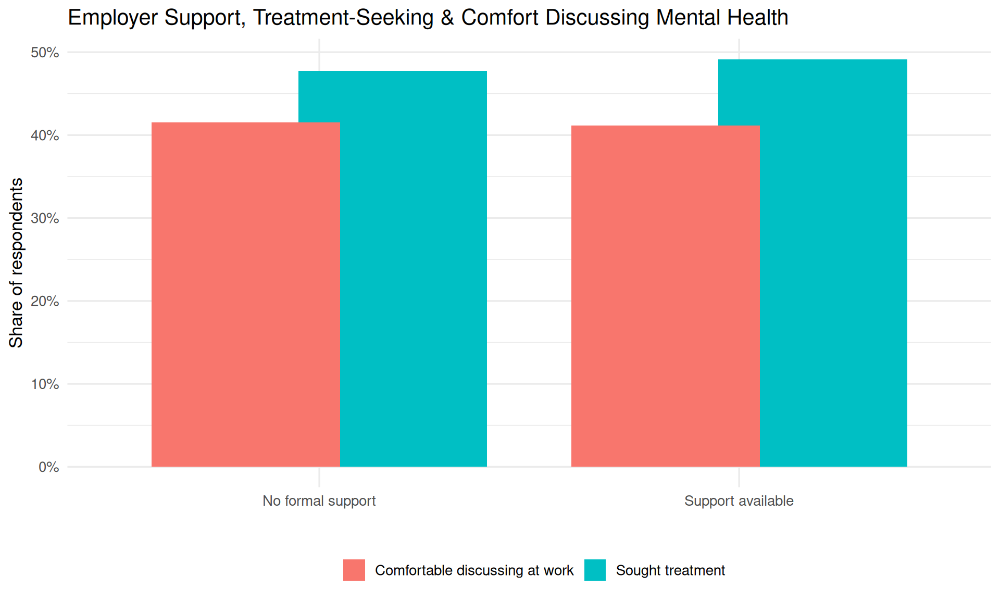
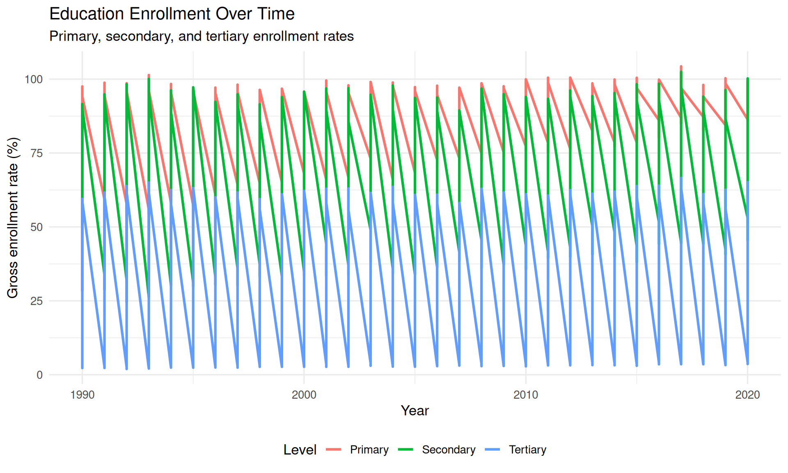
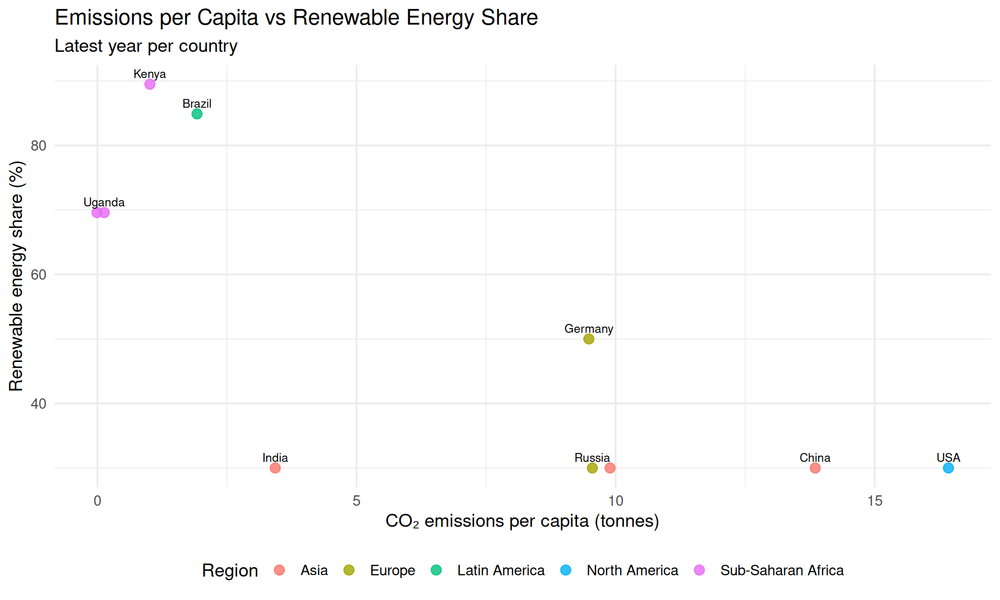
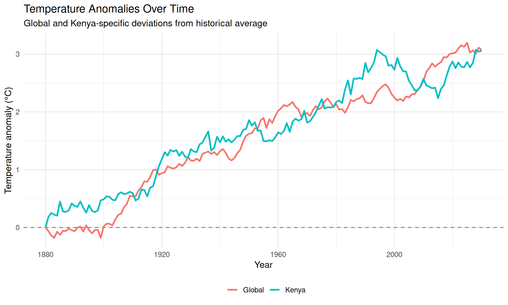

Quick, policy-focused insights across health, inequality, climate, and education
Author
Nichodemus Amollo
Published
January 1, 2025
10 Quick TidyTuesday Insights
Compact analyses using 10 curated TidyTuesday-style datasets, with a focus on health, inequality, climate, employment, and education. Each section keeps the code light and emphasizes clear, policy-relevant takeaways.
All regions show steady declines in maternal mortality from 1990–2016, but Sub-Saharan Africa remains far above the SDG 3.1 target.
Regions with faster gains in skilled birth attendance (e.g. South Asia) see sharper drops in mortality, reinforcing the link between quality obstetric care and survival.
Even with progress, closing the remaining gap in Sub-Saharan Africa will require accelerated investment in maternal health services and financial protection for poor households.
Formal workers enjoy much higher insurance coverage and ability to afford care than informal or casual workers.
Informal self-employed and casual workers represent a large share of the labour force but face the lowest financial protection, despite shouldering high health risks.
Expanding contributory schemes and subsidized coverage for informal workers is critical for universal health coverage (UHC).
The share of formal employment rises slowly, while informality remains dominant—a pattern typical of many low- and middle-income countries.
Unemployment is relatively low but persistent, highlighting that the core challenge is the quality and security of jobs rather than pure joblessness.
Policies that reduce barriers to formalisation (registration, taxation, social protection) can gradually shift workers into better-quality employment.
4. Income Inequality & Health Access (Income Groups)

Insights
Income grows for all groups, but the top 10% and top 1% pull away, driving aggregate inequality.
Higher-income groups enjoy near-universal health insurance and access, while the bottom 50% lags behind despite gradual improvements.
This pattern reinforces the need for progressive financing and targeted subsidies so that health access does not depend on being in the top of the distribution.
5. African Inequality, Health Coverage & Life Expectancy

Insights
Countries with extreme inequality (e.g. those with very high Gini coefficients) can still have relatively high coverage, but gaps remain for poorer households.
Many countries cluster around moderate inequality with middling coverage, suggesting space to improve both redistribution and service coverage.
Combining fiscal policy (tax and transfers) with universal health schemes is key to turning economic growth into equitable health access.
6. Human Development, Life Expectancy & Poverty (UNDP-style)

Insights
Very high HDI countries combine long life expectancy with near-zero poverty, reflecting strong systems and social protection.
As you move from very high → high → medium → low, both HDI and life expectancy fall, while poverty rates increase sharply.
This underscores that health, education, and income are tightly linked, and that health investments are part of broader human development strategies.
7. Mental Health in Tech Workplaces

Insights
Respondents at organisations with formal mental health support are more likely to seek treatment and more comfortable talking about mental health.
Where support is absent, stigma and fear remain major barriers, even when people recognise symptoms of depression or anxiety.
Simple workplace policies—confidential support, clear communication, and manager training—can shift culture and lower barriers to care.
8. Education Enrollment & Gender Parity

Insights
Primary and secondary enrollment increase steadily, suggesting expanded access over time.
Tertiary enrollment remains much lower, highlighting the bottleneck at higher education despite progress at lower levels.
Closing the gap requires financing, scholarships, and bridge programmes, particularly for girls and students from low-income households.
9. CO₂ Emissions & Renewable Energy Share

Insights
High emitters often have lower renewable shares, while countries like Kenya combine low emissions with high renewable penetration.
Middle-income countries sit in the middle on both metrics, facing the challenge of growing economies while decarbonising their energy mix.
Climate finance should prioritise supporting low-emission countries that are already highly renewable, while helping large emitters accelerate transition.
10. Global & Kenya Temperature Anomalies (Climate Action)

Insights
Both global and Kenya series trend upward, consistent with long-run warming.
Kenya often experiences larger positive anomalies in recent decades, reflecting heightened climate risks for agriculture and health.
Adaptation strategies—drought-resilient crops, early warning systems, and climate-smart social protection—are essential complements to global mitigation.
Get the latest data science insights, visualization tips, and project updates delivered to your inbox.
Source Code
---title: "TidyTuesday Mini Analyses: 10 Datasets"subtitle: "Quick, policy-focused insights across health, inequality, climate, and education"author: "Nichodemus Amollo"date: "2025-01-01"format: html: toc: true toc-depth: 2 code-fold: true code-tools: true code-copy: true theme: light: [cosmo, ../custom.scss] dark: [darkly, ../custom.scss] css: ../styles.scss---::: {.hero-banner}# 10 Quick TidyTuesday InsightsCompact analyses using 10 curated TidyTuesday-style datasets, with a focus on **health, inequality, climate, employment, and education**. Each section keeps the code light and emphasizes **clear, policy-relevant takeaways**.:::---## Setup```{r setup, include=FALSE}knitr::opts_chunk$set(echo =FALSE,message =FALSE,warning =FALSE,fig.width =10,fig.height =6,fig.align ="center",out.width ="100%")library(tidyverse)library(scales)```---## 1. Maternal Mortality & Skilled Birth Attendance (SDG 3.1)```{r maternal-mortality}maternal <- readr::read_csv("maternal_mortality_data.csv", show_col_types =FALSE)maternal_reg <- maternal %>%filter(year <=2016) %>%group_by(region, year) %>%summarise(mmr =mean(mmr, na.rm =TRUE),skilled =mean(skilled_attendance, na.rm =TRUE),.groups ="drop" )ggplot(maternal_reg, aes(x = year, y = mmr, color = region)) +geom_line(size =1.1) +geom_hline(yintercept =70, linetype ="dashed", colour ="red") +scale_y_log10(labels =comma_format()) +labs(title ="Maternal Mortality Ratios by Region",subtitle ="Log scale; SDG 3.1 target at 70 deaths per 100,000 live births",x ="Year",y ="Maternal mortality ratio (per 100,000 live births)",colour ="Region",caption ="Synthetic TidyTuesday-style data inspired by IHME & WHO" ) +theme_minimal(base_size =13) +theme(legend.position ="bottom")```::: {.callout-tip}### Insights- All regions show **steady declines** in maternal mortality from 1990–2016, but **Sub-Saharan Africa remains far above** the SDG 3.1 target.- Regions with **faster gains in skilled birth attendance** (e.g. South Asia) see **sharper drops** in mortality, reinforcing the link between **quality obstetric care** and survival.- Even with progress, closing the remaining gap in Sub-Saharan Africa will require **accelerated investment** in maternal health services and **financial protection** for poor households.:::---## 2. Employment Type, Earnings & Health Coverage (SDG 3 & SDG 8)```{r employment-health}employment <- readr::read_csv("employment_health_data.csv", show_col_types =FALSE)employment_summary <- employment %>%group_by(employment_type) %>%summarise(avg_share =mean(proportion, na.rm =TRUE),avg_cover =mean(insurance_coverage, na.rm =TRUE),avg_afford =mean(can_afford_care, na.rm =TRUE),avg_income =mean(avg_earnings, na.rm =TRUE),.groups ="drop" ) %>%mutate(employment_type =fct_reorder(employment_type, avg_cover) )ggplot(employment_summary, aes(x = employment_type, y = avg_cover)) +geom_col(fill ="#4c9f38") +geom_point(aes(y = avg_afford), colour ="#e5243b", size =3) +coord_flip() +labs(title ="Health Insurance & Ability to Afford Care by Employment Type",subtitle ="Bars: average insurance coverage • Dots: ability to afford care",x ="",y ="Percent of workers",caption ="Synthetic East Africa–style employment data" ) +theme_minimal(base_size =13)```::: {.callout-tip}### Insights- **Formal workers** enjoy **much higher insurance coverage** and ability to afford care than informal or casual workers.- **Informal self-employed and casual workers** represent a **large share of the labour force** but face the **lowest financial protection**, despite shouldering high health risks.- Expanding **contributory schemes** and **subsidized coverage** for informal workers is critical for **universal health coverage (UHC)**.:::---## 3. Formalisation & Unemployment Trends (Labour Markets)```{r employment-trends}employment_trends <- readr::read_csv("employment_trends_data.csv", show_col_types =FALSE)employment_long <- employment_trends %>%pivot_longer(cols =c(formal_rate, informal_rate, unemployment_rate),names_to ="indicator",values_to ="value" ) %>%mutate(indicator =recode(indicator,formal_rate ="Formal employment",informal_rate ="Informal employment",unemployment_rate ="Unemployment") )ggplot(employment_long, aes(x = year, y = value, colour = indicator)) +geom_line(size =1.1) +geom_point(size =2) +scale_colour_manual(values =c("Formal employment"="#4c9f38","Informal employment"="#fd9d24","Unemployment"="#e5243b" )) +labs(title ="Labour Market Structure Over Time",subtitle ="Gradual rise in formal jobs, slow decline in informality and unemployment",x ="Year",y ="Percent of working-age population",colour ="" ) +theme_minimal(base_size =13) +theme(legend.position ="bottom")```::: {.callout-tip}### Insights- The share of **formal employment rises slowly**, while informality remains **dominant**—a pattern typical of many low- and middle-income countries.- **Unemployment is relatively low but persistent**, highlighting that the core challenge is the **quality and security** of jobs rather than pure joblessness.- Policies that **reduce barriers to formalisation** (registration, taxation, social protection) can gradually shift workers into **better-quality employment**.:::---## 4. Income Inequality & Health Access (Income Groups)```{r income-trends}income_trends <- readr::read_csv("income_trends_data.csv", show_col_types =FALSE)income_summary <- income_trends %>%group_by(year, income_group) %>%summarise(avg_income =mean(avg_income, na.rm =TRUE),health_insurance =mean(health_insurance, na.rm =TRUE),healthcare_access =mean(healthcare_access, na.rm =TRUE),.groups ="drop" )ggplot(income_summary, aes(x = year, y = avg_income, colour = income_group)) +geom_line(size =1.1) +scale_y_continuous(labels =dollar_format(prefix ="$", big.mark =",")) +labs(title ="Average Income by Income Group",subtitle ="Persistent gaps between bottom 50% and top 10/1%",x ="Year",y ="Average income (annual)",colour ="" ) +theme_minimal(base_size =13) +theme(legend.position ="bottom")```::: {.callout-tip}### Insights- **Income grows for all groups**, but the **top 10% and top 1% pull away**, driving aggregate inequality.- Higher-income groups enjoy **near-universal health insurance and access**, while the **bottom 50%** lags behind despite gradual improvements.- This pattern reinforces the need for **progressive financing** and **targeted subsidies** so that health access does not depend on being in the top of the distribution.:::---## 5. African Inequality, Health Coverage & Life Expectancy```{r africa-inequality}africa_ineq <- readr::read_csv("africa_inequality_data.csv", show_col_types =FALSE)ggplot(africa_ineq, aes(x = gini_coefficient, y = health_coverage,size = gdp_per_capita, colour = region)) +geom_point(alpha =0.8) +scale_x_continuous(labels = scales::number_format(accuracy =0.01)) +scale_y_continuous(labels =percent_format(scale =1)) +scale_size_continuous(name ="GDP per capita (USD)") +labs(title ="Income Inequality vs Health Coverage in African Countries",subtitle ="Bubble size reflects GDP per capita; higher Gini = more unequal",x ="Gini coefficient (income inequality)",y ="Population with some health coverage (%)",colour ="Sub-region" ) +theme_minimal(base_size =13) +theme(legend.position ="bottom")```::: {.callout-tip}### Insights- Countries with **extreme inequality** (e.g. those with very high Gini coefficients) can still have **relatively high coverage**, but gaps remain for poorer households.- Many countries cluster around **moderate inequality with middling coverage**, suggesting space to improve **both redistribution and service coverage**.- Combining **fiscal policy** (tax and transfers) with **universal health schemes** is key to turning economic growth into **equitable health access**.:::---## 6. Human Development, Life Expectancy & Poverty (UNDP-style)```{r hdi-poverty}hdi <- readr::read_csv("hdi_poverty_data.csv", show_col_types =FALSE)hdi_latest <- hdi %>%group_by(dev_category) %>%filter(year ==max(year)) %>%summarise(avg_hdi =mean(hdi, na.rm =TRUE),avg_life_exp =mean(life_expectancy, na.rm =TRUE),avg_poverty_rate =mean(poverty_rate, na.rm =TRUE),.groups ="drop" )ggplot(hdi_latest, aes(x = dev_category, y = avg_hdi, fill = dev_category)) +geom_col(show.legend =FALSE) +geom_text(aes(label =round(avg_hdi, 3)), vjust =-0.3, size =3.3) +ylim(0, 1) +labs(title ="Human Development Index by Development Category",subtitle ="Latest year in the dataset",x ="",y ="Average HDI" ) +theme_minimal(base_size =13)```::: {.callout-tip}### Insights- **Very high HDI** countries combine **long life expectancy** with **near-zero poverty**, reflecting strong systems and social protection.- As you move from **very high → high → medium → low**, both **HDI and life expectancy fall**, while **poverty rates increase sharply**.- This underscores that **health, education, and income** are tightly linked, and that **health investments** are part of broader human development strategies.:::---## 7. Mental Health in Tech Workplaces```{r mental-health-tech}mh <- readr::read_csv("mental_health_tech_data.csv", show_col_types =FALSE)mh_summary <- mh %>%mutate(employer_support =if_else(employer_provides_mh, "Support available", "No formal support") ) %>%group_by(employer_support) %>%summarise(treated =mean(sought_treatment, na.rm =TRUE),comfortable =mean(comfort_level =="Comfortable", na.rm =TRUE),.groups ="drop" )mh_long <- mh_summary %>%pivot_longer(cols =c(treated, comfortable),names_to ="indicator",values_to ="value") %>%mutate(indicator =recode(indicator,treated ="Sought treatment",comfortable ="Comfortable discussing at work") )ggplot(mh_long, aes(x = employer_support, y = value, fill = indicator)) +geom_col(position =position_dodge(width =0.7)) +scale_y_continuous(labels =percent_format(accuracy =1)) +labs(title ="Employer Support, Treatment-Seeking & Comfort Discussing Mental Health",x ="",y ="Share of respondents",fill ="" ) +theme_minimal(base_size =13) +theme(legend.position ="bottom")```::: {.callout-tip}### Insights- Respondents at organisations with **formal mental health support** are **more likely to seek treatment** and **more comfortable** talking about mental health.- Where support is absent, **stigma and fear** remain major barriers, even when people recognise symptoms of depression or anxiety.- Simple workplace policies—**confidential support, clear communication, and manager training**—can shift culture and lower barriers to care.:::---## 8. Education Enrollment & Gender Parity```{r education}education <- readr::read_csv("education_data.csv", show_col_types =FALSE)education_long <- education %>%select(year, primary_enrollment, secondary_enrollment, tertiary_enrollment) %>%pivot_longer(cols =-year,names_to ="level",values_to ="enrollment" ) %>%mutate(level =recode(level,primary_enrollment ="Primary",secondary_enrollment ="Secondary",tertiary_enrollment ="Tertiary") )ggplot(education_long, aes(x = year, y = enrollment, colour = level)) +geom_line(size =1.1) +labs(title ="Education Enrollment Over Time",subtitle ="Primary, secondary, and tertiary enrollment rates",x ="Year",y ="Gross enrollment rate (%)",colour ="Level" ) +theme_minimal(base_size =13) +theme(legend.position ="bottom")```::: {.callout-tip}### Insights- **Primary and secondary enrollment** increase steadily, suggesting **expanded access** over time.- **Tertiary enrollment** remains much lower, highlighting the **bottleneck at higher education** despite progress at lower levels.- Closing the gap requires **financing, scholarships, and bridge programmes**, particularly for girls and students from low-income households.:::---## 9. CO₂ Emissions & Renewable Energy Share```{r co2}co2 <- readr::read_csv("co2_emissions_data.csv", show_col_types =FALSE)co2_latest <- co2 %>%group_by(country) %>%filter(year ==max(year)) %>%ungroup()ggplot(co2_latest, aes(x = emissions_per_capita, y = renewable_pct, label = country)) +geom_point(aes(colour = region), size =3, alpha =0.8) +geom_text(vjust =-0.7, size =3, check_overlap =TRUE) +labs(title ="Emissions per Capita vs Renewable Energy Share",subtitle ="Latest year per country",x ="CO₂ emissions per capita (tonnes)",y ="Renewable energy share (%)",colour ="Region" ) +theme_minimal(base_size =13) +theme(legend.position ="bottom")```::: {.callout-tip}### Insights- High emitters often have **lower renewable shares**, while countries like Kenya combine **low emissions** with **high renewable penetration**.- Middle-income countries sit in the middle on both metrics, facing the challenge of **growing economies** while **decarbonising** their energy mix.- Climate finance should prioritise **supporting low-emission countries** that are already highly renewable, while helping **large emitters accelerate transition**.:::---## 10. Global & Kenya Temperature Anomalies (Climate Action)```{r temperature}temperature <- readr::read_csv("temperature_data.csv", show_col_types =FALSE)temperature_long <- temperature %>%pivot_longer(cols =c(global_anomaly, kenya_anomaly),names_to ="series",values_to ="anomaly" ) %>%mutate(series =recode(series,global_anomaly ="Global",kenya_anomaly ="Kenya") )ggplot(temperature_long, aes(x = year, y = anomaly, colour = series)) +geom_hline(yintercept =0, linetype ="dashed", colour ="grey50") +geom_line(size =1.1) +labs(title ="Temperature Anomalies Over Time",subtitle ="Global and Kenya-specific deviations from historical average",x ="Year",y ="Temperature anomaly (°C)",colour ="" ) +theme_minimal(base_size =13) +theme(legend.position ="bottom")```::: {.callout-tip}### Insights- Both **global and Kenya** series trend upward, consistent with **long-run warming**.- Kenya often experiences **larger positive anomalies** in recent decades, reflecting **heightened climate risks** for agriculture and health.- Adaptation strategies—**drought-resilient crops, early warning systems, and climate-smart social protection**—are essential complements to global mitigation.:::---[⬅️ Back to TidyTuesday Index](index.qmd)